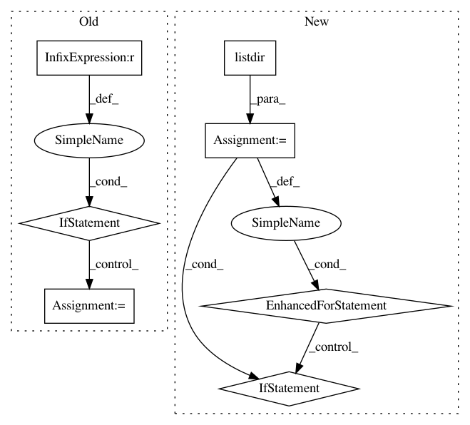

8f22750dbdac281232241c20736018c47a7a8e26,ants/utils/get_ants_data.py,,get_ants_data,#Any#,10
Before Change
string
filepath of test image
if name == "r16":
datapath = os.path.join(data_path, "r16slice.jpg")
elif name == "r27":
datapath = os.path.join(data_path, "r27slice.jpg")
elif name == "r64":
datapath = os.path.join(data_path, "r64slice.jpg")
elif name == "r85":
datapath = os.path.join(data_path, "r85slice.jpg")
elif name == "mni":
datapath = os.path.join(data_path, "mni.nii.gz")
elif name == "surf":
datapath = os.path.join(data_path, "surf.nii.gz")
else:
raise ValueError("data file not found")
return datapath
After Change
filepath of test image
datapath = None
for fname in os.listdir(data_path):
if name in fname:
datapath = os.path.join(data_path, fname)
if datapath is None:
raise ValueError("File doesnt exist. Options: " , os.listdir(data_path))
return datapath
In pattern: SUPERPATTERN
Frequency: 3
Non-data size: 7
Instances
Project Name: ANTsX/ANTsPy
Commit Name: 8f22750dbdac281232241c20736018c47a7a8e26
Time: 2017-09-07
Author: ncullen.th@dartmouth.edu
File Name: ants/utils/get_ants_data.py
Class Name:
Method Name: get_ants_data
Project Name: bokeh/bokeh
Commit Name: 29db516a79944c88078cc31bad09b20ffecdb4f9
Time: 2018-04-06
Author: mattpap@gmail.com
File Name: tests/examples/collect_examples.py
Class Name:
Method Name: add_examples
Project Name: nilmtk/nilmtk
Commit Name: 03d22bbb0177117498b3021e068611c6b9421e15
Time: 2014-07-21
Author: oliparson@gmail.com
File Name: nilmtk/dataset_converters/wikienergy/download_wikienergy.py
Class Name:
Method Name: download_wikienergy